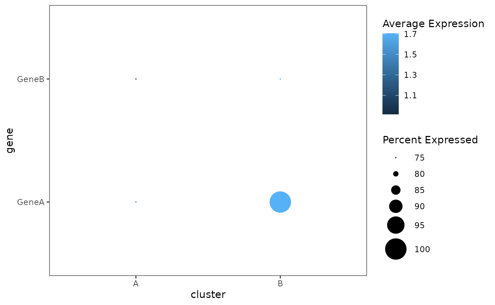
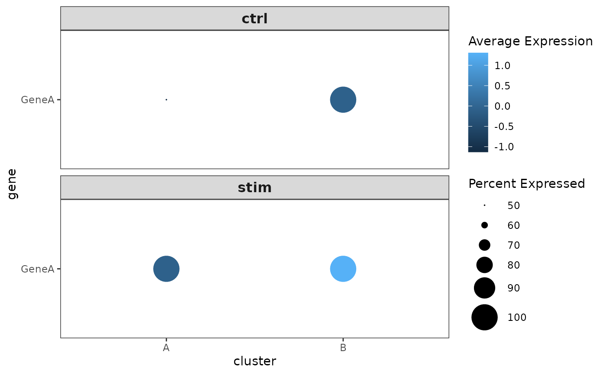

Lightweight dotplot reimplementation to run only on data frame with gene expression and metadata.
Usage
dotplot(
df,
xcol,
ycol,
split = NULL,
scale = TRUE,
dot.scale = 10,
col.min = -2.5,
col.max = 2.5
)Arguments
- df
data.frame with gene expression data
- xcol
x-axis grouping variable
- ycol
genes to show (on y-axis). can be multiple
- split
faceting variable
- scale
should data be scaled? Default: TRUE
- dot.scale
dot size scaling factor (default: 10)
- col.min
if data is scaled, this is the lower limit of values (default: -2.5)
- col.max
if data is scaled, this is the upper limit of values (default: 2.5)
Examples
df <- data.frame(
cluster = factor(rep(c("A", "B"), each = 4)),
condition = factor(rep(c("ctrl", "stim"), times = 4)),
GeneA = c(0, 2, 4, 5, 1, 3, 6, 8),
GeneB = c(1, 0, 3, 2, 5, 0, 7, 4)
)
dotplot(df, xcol = "cluster", ycol = c("GeneA", "GeneB"), scale = FALSE)
#> Warning: `aes_string()` was deprecated in ggplot2 3.0.0.
#> ℹ Please use tidy evaluation idioms with `aes()`.
#> ℹ See also `vignette("ggplot2-in-packages")` for more information.
#> ℹ The deprecated feature was likely used in the cascadeR package.
#> Please report the issue at <https://github.com/NICHD-BSPC/cascadeR/issues>.

dotplot(df, xcol = "cluster", ycol = "GeneA", split = "condition")
